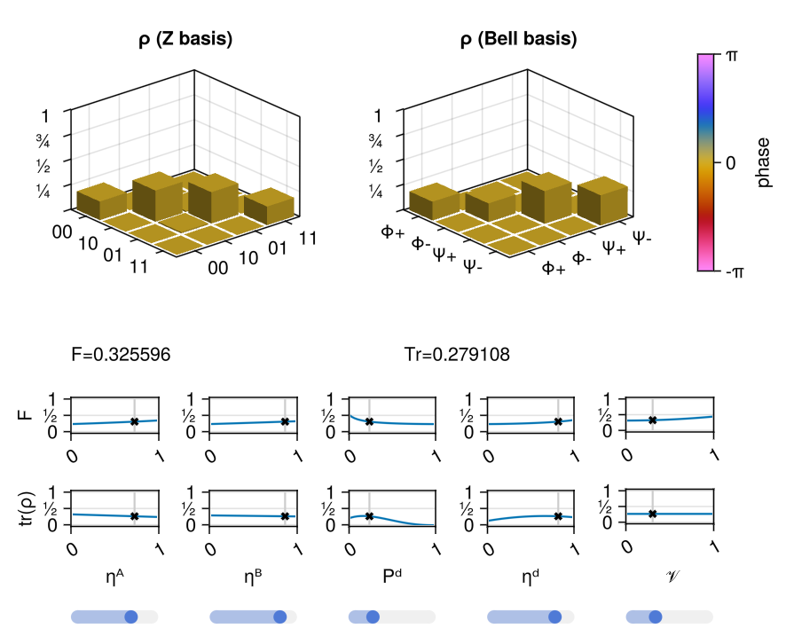

State Explorer
This tutorial shows how to use the StatesZoo state explorer to inspect a parameterized two-qubit resource state before you embed it into a larger simulation.
Learning Goal
By the end, you should be able to:
- launch the interactive explorer locally,
- inspect how one predefined state family changes with its parameters, and
- read the main plots well enough to decide whether that state family is a good surrogate for your model.
What You Need
- a working QuantumSavory installation,
- a Makie backend such as
GLMakie, - and
QuantumSavory.StatesZoo.
Step 1: Launch The Explorer
Start with the Barrett-Kok Bell-pair model from the StatesZoo.
using GLMakie
using QuantumSavory
using QuantumSavory.StatesZoo
stateexplorer(BarrettKokBellPairW)This opens an interactive figure for that state family.

Step 2: Identify What The Explorer Is Showing
The explorer is not just a picture of one state. It is a parameter study tool.
For each current parameter choice, it shows:
- bar plots of the current two-qubit state in standard bases,
- summary figures of merit for that current choice,
- and one-parameter sweeps showing how those figures change when one slider is varied and the others are held fixed.
This is useful when you care about the output of a physical entanglement source but do not want to rebuild its derivation by hand each time.
Step 3: Move One Parameter At A Time
Pick one slider and move it slowly. Watch two things:
- how the current state's bar plots change;
- how the sweep plot for that same parameter shifts relative to the current slider value.
This is the fastest way to answer practical modeling questions such as:
- which parameter is dominating the loss of fidelity,
- whether the state family changes smoothly in the regime you care about,
- and whether your hardware assumptions place you in a usable region at all.
Step 4: Compare State Families
Once you understand one family, try another:
using QuantumSavory.StatesZoo.Genqo: GenqoUnheraldedSPDCBellPairW
stateexplorer(GenqoUnheraldedSPDCBellPairW)This is where the tutorial becomes useful for model selection. Different state families expose different parameters and represent different physical source assumptions, but the explorer gives them a consistent inspection workflow.
Step 5: Decide Whether To Use The State In A Simulation
If the explored state family looks like a good surrogate for your hardware, the next step is to use it as an initialization object in a normal register model.
reg = Register(2)
initialize!(reg[1:2], BarrettKokBellPairW(0.8, 0.8, 1e-6, 0.9, 0.95))The important point is that the state explorer is not separate from the rest of QuantumSavory. It is inspecting the same reusable state families that the rest of the library can consume.
Live Version
If you want a hosted demo first, a live version is available at areweentangledyet.com/state_explorer/.
What To Carry Forward
The State Explorer is most useful when you already know the kind of hardware process you want to approximate, but you need a fast way to inspect the consequences of its parameters before wiring that surrogate state into a protocol or network simulation.
Where To Go Next
- Read Predefined Models of Quantum States for the available state families.
- Read Zoos as Composable Building Blocks for how
StatesZoofits into the larger architecture.